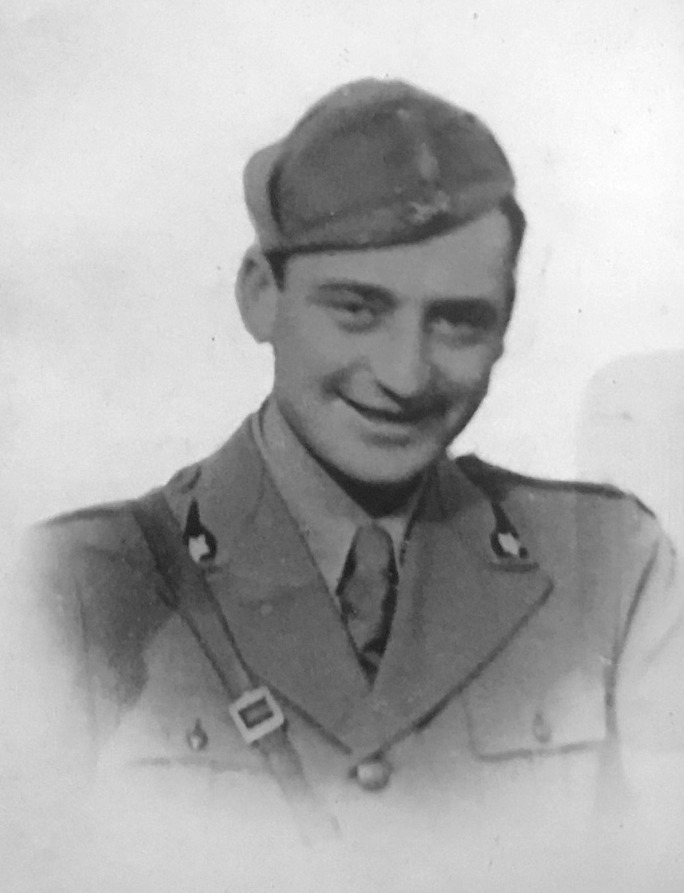

Giovanni nasce a Calvisano il 25 agosto 1911. Suo padre, Paolo, fa il casaro mentre la madre, Maria Pasotti, è una maestra. A soli otto anni Giovanni rimane orfano di mamma, insieme ai fratelli Antonietta e Francesco. Frequenta la scuola elementare e poi prosegue gli studi presso l’istituto tecnico “Nicolò Tartaglia” a Brescia. Poiché i trasporti sono difficoltosi, Giovanni viene messo a pensione presso la famiglia del maestro Turra, di origini calvisanesi. Nel 1931 consegue il diploma di geometra e ben presto comincia ad esercitare la professione. Nel 1933 dirige i lavori della costruzione della scuola elementare di Mezzane e nel 1934 diventa tecnico comunale. Viene il tempo del servizio militare e, nel 1936, Giovanni è a Tirano alla scuola per ufficiali dove consegue il grado di sottotenente e poi di capitano. Scrive a casa dicendo che pensa di essere prossimo al congedo, ma viene trattenuto per urgenti necessità del Comando e il congedo per lui non arriverà più: la guerra si avvicina.
Negli anni della guerra Giovanni scrive numerose lettere dalle sue diverse destinazioni; il 17 aprile 1943 scrive per la prima volta da Cefalonia dove si trova con la sua divisione, la Divisione Acqui. Scrive “Finalmente anche io sono arrivato a destinazione e vi scrivo dal mio reparto. Mi trovo ben sistemato in un paesino tipicamente mediterraneo”.
La vita è tranquilla a Cefalonia e Giovanni scrive ai suoi familiari che dove si trova non vi è pericolo e che la guerra è lontana. Nel mese di agosto chiede di avere una licenza per tornare a casa e partecipare al matrimonio del fratello Francesco, ma all’ultimo momento la licenza viene revocata.
L’8 settembre il governo del generale Badoglio firma l’armistizio con gli anglo-americani. I tedeschi, che prima erano alleati degli italiani, ora sono i nemici. A Cefalonia è il caos totale: per alcuni giorni regna l’incertezza, non vi sono ordini precisi. Il generale Gandin aspetta ordini dall’Italia che non arriveranno mai, come non arriveranno armi, né aiuti, né vettovaglie. La Divisione Acqui è abbandonata a se stessa e al suo destino. Il giorno 22 settembre il capitano Serafini si trova ricoverato nell’ospedale 37 di Argostoli, da lì viene prelevato insieme ad altri sei ufficiali, forse per il tradimento di un altro ufficiale del quale essi non condividevano l’operato ambiguo. Vengono postari sul retro dell’ospedale e lì vengono fucilati. I loro corpi sono dati alle fiamme. Il cappellano militare Luigi Ghilardini, che ha assistito da una finestrella dell’ospedale all’esecuzione, riesce a recuperare dal corpo di Giovanni alcuni oggetti personali: una penna stilografica, alcuni documenti e della carta da lettera bruciacchiati, coperti di cenere e intrisi di sangue, una medaglietta votiva e un anellino.
Dopo la Liberazione si sparge la voce che alcuni reduci stavano tornando, ma la speranza del ritorno di Giovanni si spegne quando il compaesano e amico Battista Perini, che insieme al cappellano militare aveva assistito all’esecuzione, si reca dalla Famiglia Serafini e consegna loro i pochi oggetti, tutto ciò che rimaneva di Giovanni.
Suo fratello Francesco compone per lui una poesia e un’epigrafe che si può leggere sul cippo dedicato a Giovanni presso il cimitero:
“Vento di greco,
che verso Italia spiri,
bacia per noi
la sacra terra
per cui morimmo”